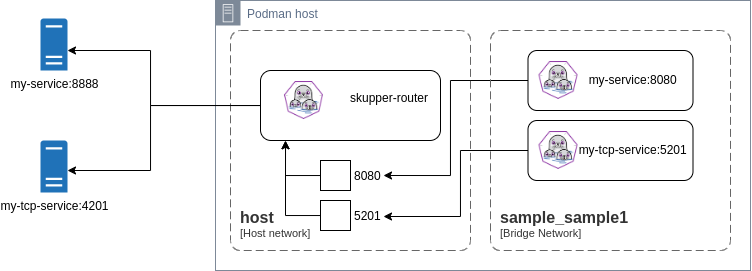

3 minutes
Skupper service ingress through containers
Introduction
In order to evaluate some strategies for dealing with service ingresses, when running the skupper-router with Podman or Docker, I have used this simple scenario below:

The router component is connect to the host network, which avoids restarts when extra ports need to be bound.
In this topology, the my-service workload is reachable from the container’s host machine.
It is exposed through the skupper-router container, which is binding port 8080 on the host machine.
Another container named my-service (for illustration only) is also created and it can be connected to multiple other container (bridge) networks, in order to provide a stable name resolution to other containers connected to those container networks.
This extra container is also listening to port 8080 (in all its interfaces) and it has the my-service alias on all container networks it is connected with.
To enable name resolution inside the container network, I have explored three initial scenarios that allow traffic reaching the my-service container on port 8080 to actually reach the exposed workload through the skupper-router, which is actually listening port 8888.
Scenarios
- Netfilter rules to redirect packets to the appropriate target
- An edge-router that exposes tcpListeners to the appropriate addresses
- HA proxy as a reverse-proxy
1. Netfilter
Using Netfilter, we can simply add rules to redirect incoming packets reaching the service port (8080) to the skupper_router ingress IP and Port, forcing the traffic to go through the router, which is important for observability.
This is extremely simple and the fastest choice.
2. Edge-router
An edge-router can also be used, as we just need to expose a tcpListener bound to the service port (8080) and it will use the connector address to ensure data reaches the target workload.
This approach has an extra benefit as you don’t need to expose the service to the container’s host network, because it does not need a target IP and Port. On the other hand we introduce an extra hop.
3. HAProxy
The HAProxy can be configured as a reverse proxy, forwarding packets to the router ingress IP and Port. In the end it is similar to the Netfilter approach, but it requires an extra hop processing the packets as well, so this is possibly the least recommended choice.
Artifacts for evaluation
You can download and evaluate each of the approaches through the following links.
These samples can be run using docker compose or podman-compose.
Validating each scenario
| Container engine | Deploy | Teardown |
|---|---|---|
| Podman | podman-compose up -d | podman-compose down |
| Docker | docker compose up -d | docker compose down |
For each scenario, you can validate that you’re able to access the target service through Host’s port 8080 as well as through the container’s bridge network (sample_sample1) via my-service:8080.
Here is how:
- Access through the host
curl http://0.0.0.0:8080
- Access through the container’s bridge network
First adjust the value of the CONTAINER variable to the container engine being used (podman or docker).
CONTAINER=podman
${CONTAINER} run --rm --network sample_sample1 curlimages/curl http://my-service:8080
Conclusion
If requiring a host’s IP/Port to be exposed is not a problem, the Netfilter approach seems like the best fit.
But in case exposing only into the container’s network without exposing it through the host is a requirement, then Edge-router is the only choice that can be used.
skupper skupper-router podman docker compose netfilter iptables edge edge-router haproxy
542 Words
2024-03-22 16:19 -0300